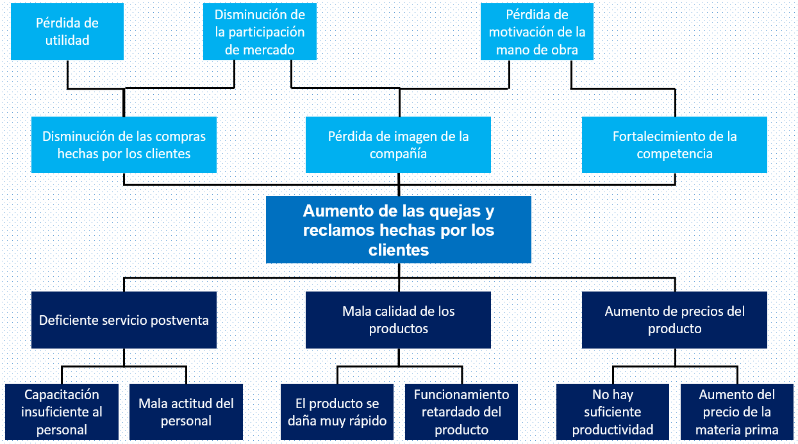
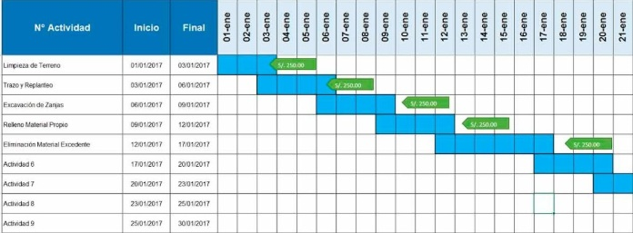

La necesidad puede ser una poderosa fuerza impulsora para el emprendimiento, transformándose en oportunidades de negocio. Cuando las personas identifican problemas o carencias no resueltas en el mercado.
La integralidad en el estudiante que se busca mediante el Sello Transformador Areandina orienta hacia la proposición de ideas que generan valor económico y social, contribuyendo al mismo tiempo a alcanzar los ODS.
Caso exitoso:
Herramienta de identificación de necesidades que se visualiza desde la comprensión de las causas y consecuencias de la problemática de estudio.
Recurso: Árbol de Problemas
Argumentar es justificar una idea con razones y evidencia válida. Es una habilidad esencial para respaldar propuestas académicas o profesionales.
Se deben buscar fuentes confiables que ayuden a comprender:
Consulta el recurso: Guía APA LaProfeVivy
Definición: Un objetivo es una declaración clara y específica de lo que se desea lograr en un proyecto, estudio o actividad.
Recurso: Objetivo
Es una interrogante clara y precisa que orienta el desarrollo del proyecto. Delimita la problemática y permite identificar variables clave.
Debe contener: sujeto de estudio, contexto y acción o problema en forma interrogativa.
Debe derivarse de herramientas como el árbol de problemas, ser clara, específica, investigable y estar contextualizada.
Es una suposición basada en conocimientos previos que ofrece una posible solución o explicación al problema planteado.
Permite guiar la investigación, establecer relaciones entre variables y proponer una solución lógica que luego puede ser verificada.
Usualmente con estructura condicional: Si (causa), entonces (efecto).
Recurso: Hipótesis
Grupo específico al que se dirige el proyecto o solución, caracterizado por necesidades, intereses y contexto.
Edad, nivel educativo, ocupación, ubicación, necesidades comunes.
Se puede derivar del análisis de herramientas como el Mapa de actores, el Mapa de empatía o el modelo de Buyer Persona, los cuales permiten identificar quiénes son, qué piensan, qué sienten y qué necesitan los beneficiarios del proyecto.
Es la delimitación de lo que el proyecto cubrirá o no cubrirá. Establece los límites, responsabilidades, entregables y objetivos realistas.
Se recomienda utilizar un Diagrama de Gantt para visualizar de manera clara las actividades, responsables y fechas. Este puede hacerse fácilmente en herramientas como Microsoft Excel o Google Sheets.
Representación gráfica de un algoritmo, que muestra los pasos o procesos necesarios para resolver un problema de manera secuencial y visual.
Conjunto de instrucciones o pasos lógicos que se siguen para resolver un problema o realizar una tarea.